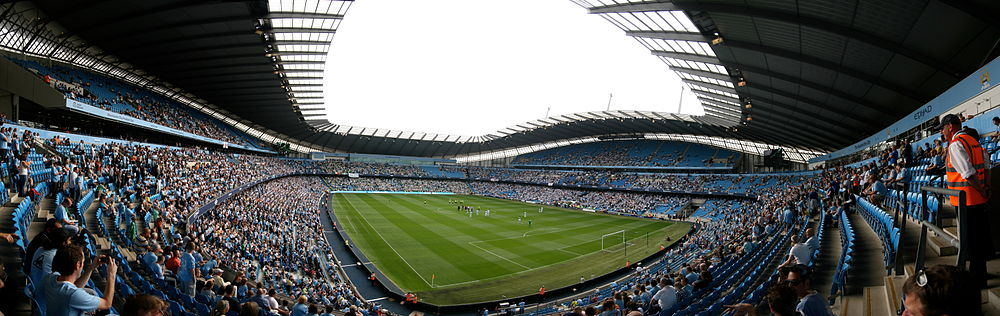

Titulo1
Si los ladrillos no estan bien hechos, las paredes se caen.

Comenzar
Si los ladrillos no estan bien hechos, las paredes se caen.
Lo que estoy construyendo aqui es una pared enorme, por lo que necesito montones de ladrillos.Por suerte conozco a muchos que los fabrican, asi como a toda clase de personas utiles.

Una vez mas, mi agradecimiento para esos buenos amigos que con tanta gentileza pusieron a mi disposicion sus conocimientos para que mis ladrillos fueran solidos y de buena calidad:
A mi Archimaestre Sage Walker, Al Capitan de los Constructores Carl Keim Y a Melinda Snodgrass, mi caballeriza mayor. Y como siempre, a Parris.
